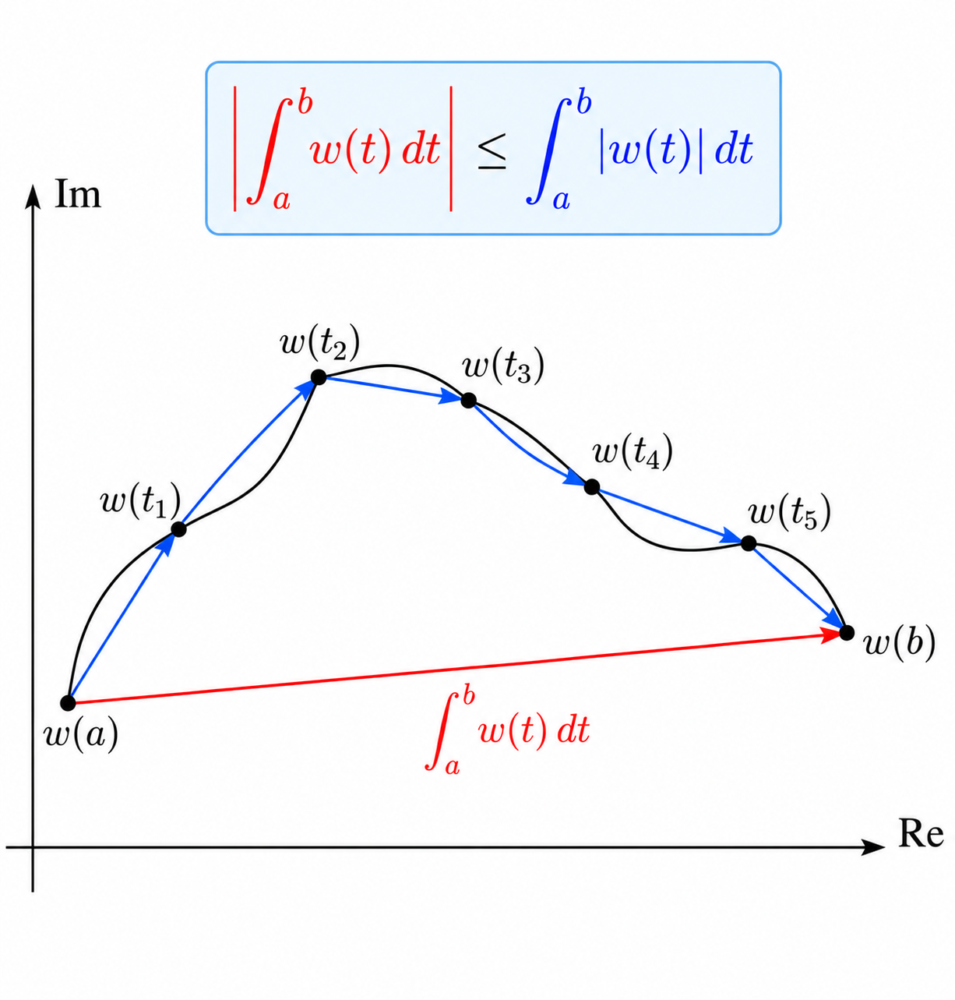
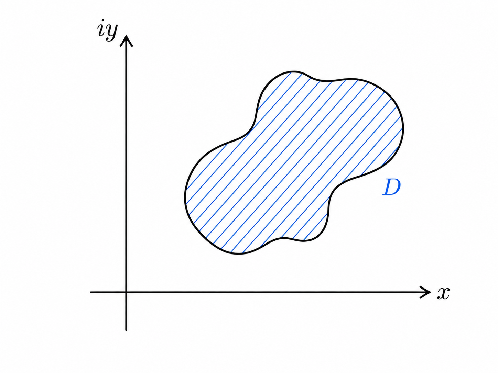
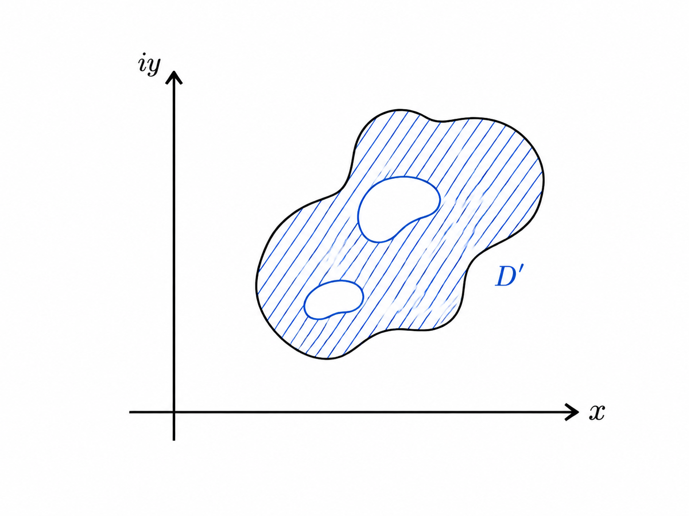
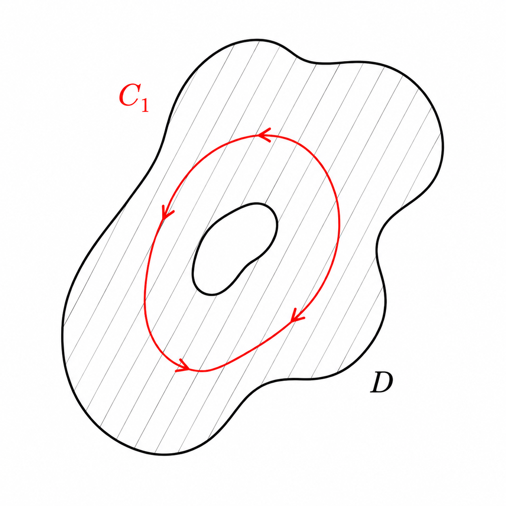
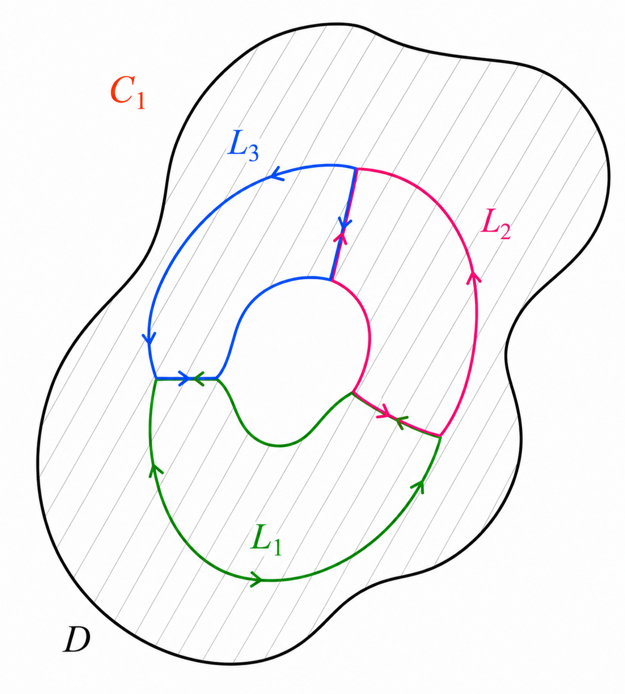
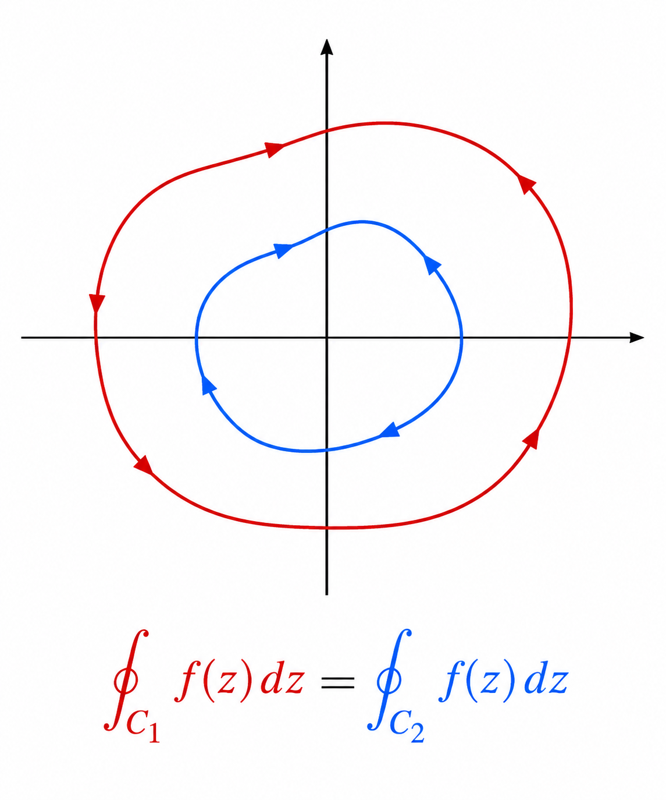
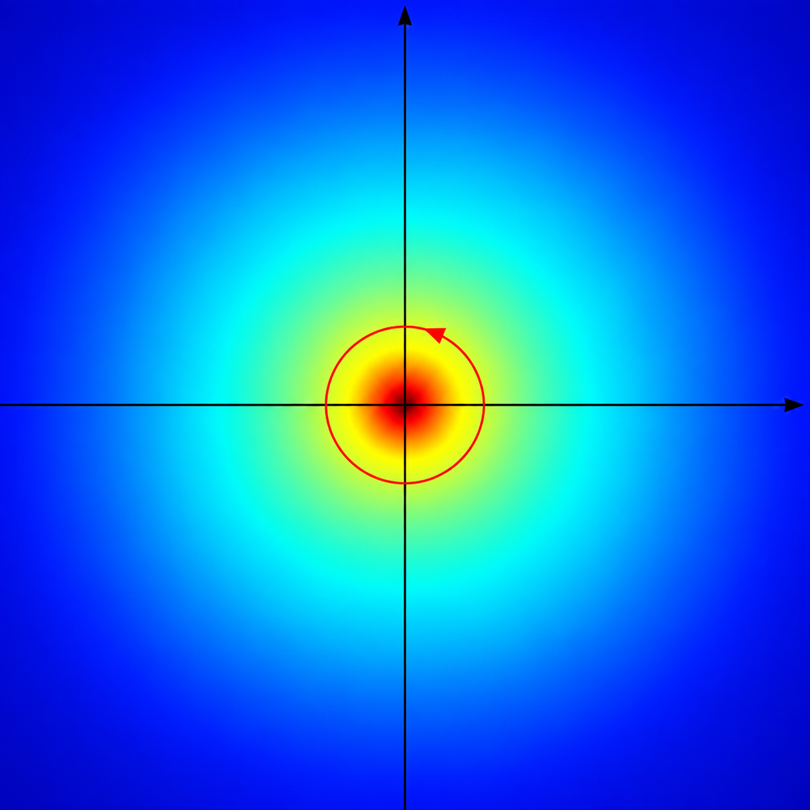

Basics of Complex Integration
§ 1. Fundamentals
For any integrable function \(w(t)\),
Suppose the complex integral has magnitude \(\rho_0\) and phase \(\theta_0\), so that
\[\int_a^b w(t)\,dt=\rho_0e^{i\theta_0}.\]Multiplying by \(e^{-i\theta_0}\) gives
\[\rho_0=\int_a^b w(t)e^{-i\theta_0}\,dt.\]Taking real parts,
\[\rho_0=\int_a^b\operatorname{Re}\!\left(w(t)e^{-i\theta_0}\right)dt.\]Since the real part of a complex number is always less then or equal to its modulus,
\[\rho_0\leq\int_a^b\left|w(t)e^{-i\theta_0}\right|dt=\int_a^b|w(t)|\,dt.\]

Let \(C\) be a contour of length \(L\). If \(|f(z)|\leq M\) for all \(z\) on \(C\), then
Expanding the contour integral using a parametrization \(z=z(t)\),
Applying the triangle inequality,
Because \(|f(z)|\leq M\) on \(C\),
1.1. Cauchy-Goursat Theorem
A domain \(D\) is simply connected if every simple closed contour \(C\subset D\) encloses a region that lies entirely within \(D\). Informally, there are no holes. A domain is multiply connected if this property fails, so the domain contains holes that contours cannot shrink across.


Let \(D\) be a simply connected domain. If \(f(z)\) is analytic on \(D\), then for any simple closed contour \(C\subset D\),
Write \(f(z)=u(x,y)+iv(x,y)\) and split the contour integral into real and imaginary parts:
Since \(f\) is analytic, the Cauchy-Riemann equations give
Notice that these conditions imply that the differential forms \(u \, dx - v \, dy\) and \(v \, dx + u \, dy\) are exact differentials. For instance, taking the mixed partials:
Suppose \(C\) is a simple closed contour containing disjoint simple closed contours \(C_1,\ldots,C_n\) in its interior. If \(f(z)\) is analytic on the region between \(C\) and the inner contours, with the inner contours oriented clockwise as induced boundary components, then
Equivalently, if all \(C_k\) are given positive (counterclockwise) orientation, then


If \(C_1\) and \(C_2\) are positively oriented simple closed contours, with \(C_1\) entirely inside \(C_2\), and \(f(z)\) analytic on the region between them, then
Thus contour integrals are invariant under continuous deformations through regions of analyticity, provided no singularity is crossed.
The Fundamental Theorem for complex line integrals does not generally hold in multiply connected domains. The value of an integral may depend on the topology of the domain and on whether the contour encloses singularities.

1.2. Cauchy Integral Formula
We have the formula:
By topological invariance, shrink \(C\) to a small circle \(C_\epsilon\) of radius \(\epsilon\) centered at the origin. Parameterize it by \(z=\epsilon e^{i\theta}\), \(0\leq\theta\leq2\pi\), so that \(dz=i\epsilon e^{i\theta}d\theta\). Then

Let \(D\) be a simply connected domain. Suppose \(f(z)\) is analytic on \(D\), and let \(C\subset D\) be a positively oriented simple closed contour. For any point \(z_0\) strictly inside \(C\),
We aim to evaluate the integral \(\oint_{C} \frac{f(z)}{z - z_0} dz\) by isolating the value \(f(z_0)\). Consider the difference:
\[k = \oint_{C} \frac{f(z)}{z - z_0} dz - f(z_0) \oint_{C} \frac{dz}{z - z_0}.\]By evaluating \(\oint_{C} \frac{dz}{z-z_0} = 2\pi i\) (substituting \(z_0\) into the earlier example), we can write:
\[k = \oint_{C} \frac{f(z) - f(z_0)}{z - z_0} dz.\]Let \(C_1\) be a small circle of radius \(r\) centered at \(z_0\). By the continuity of \(f\), for any \(\epsilon > 0\), we can choose \(r\) small enough such that \(|f(z) - f(z_0)| < \epsilon\) on \(C_1\). Then, we have:
\[|k| = \left| \oint_{C_1} \frac{f(z) - f(z_0)}{z - z_0} dz \right| \leq \oint_{C_1} \frac{|f(z) - f(z_0)|}{|z - z_0|} |dz| < \oint_{C_1} \frac{\epsilon}{r} |dz|.\]Evaluating the integral of the arc length element \(|dz|\) over the circle \(C_1\) gives its circumference \(2\pi r\). Hence:
\[|k| < \frac{\epsilon}{r} (2\pi r) = 2\pi \epsilon.\]Since \(\epsilon\) can be made arbitrarily small, we must have \(k = 0\). Therefore:
\[\oint_{C} \frac{f(z)}{z - z_0} dz - 2\pi i f(z_0) = 0 \implies f(z_0) = \frac{1}{2\pi i} \oint_{C} \frac{f(z)}{z - z_0} dz.\]
Let \(n\geq0\). For a function \(f\) analytic on and inside a positively oriented simple closed contour \(C\),
This follows by differentiating the Cauchy integral formula under the integral sign, or by induction on \(n\). In particular, all derivatives of an analytic function are analytic.
Let \(f\) be analytic on and inside a circle \(C_R\) of radius \(R\) centered at \(z_0\). If \(M_R\) is the maximum value of \(|f(z)|\) on \(C_R\), then
Starting from the derivative formula,
Taking moduli and applying the ML inequality,
On \(C_R\), we have \(|f(z)|\leq M_R\) and \(|z-z_0|=R\), while the circumference is \(2\pi R\). Thus
§ 2. Problem Solving
If \(f\) is entire and bounded, so that \(|f(z)|\leq M\) for all \(z\in\mathbb{C}\), then \(f\) is constant.
By Cauchy's estimate with \(n=1\), applied on a circle of radius \(R\) centered at an arbitrary point \(z\),
Because \(f\) is entire, \(R\) can be arbitrarily large. Letting \(R\to\infty\),
Therefore \(f'(z)=0\) everywhere, and hence \(f\) is constant.
Let \(f\) be continuous on a domain \(D\). If
for every closed contour \(C\subset D\), then \(f\) is analytic throughout \(D\).
Let \(C\) be a positively oriented simple closed contour. The area enclosed by \(C\) is
Write \(\overline{z}=x-iy\) and \(dz=dx+i\,dy\). Then
The first term is an exact differential and integrates to zero around a closed contour. Hence
Green's theorem identifies the remaining integral with the enclosed area.
2.1. Fundamental theorem of algebra
Every non-constant polynomial \(P(z)\) of degree \(n\geq1\),
has at least one complex root \(z_0\) such that \(P(z_0)=0\).
A useful construction is
\[f(z)=\frac{1}{P(z)}.\]Assuming that \(P\) never vanishes makes \(f\) entire, after which Liouville's theorem can be used to obtain a contradiction.
Assume that \(P\) has no roots. Then \(f(z)=1/P(z)\) is entire. For sufficiently large \(|z|\), the leading term dominates, so \(|P(z)|\to\infty\) and consequently \(|f(z)|\to0\). Thus there is an \(R>0\) such that \(|f(z)|<1\) for \(|z|>R\).
On the compact disk \(|z|\leq R\), the function \(f\) is continuous, so it attains a finite maximum \(M_0\). Hence \(f\) is bounded on all of \(\mathbb{C}\). Liouville's theorem forces \(f\) to be constant, so \(P\) must be constant, contradicting \(\deg P\geq1\). Therefore \(P\) has a complex root.
A polynomial of degree \(n\geq1\) has exactly \(n\) complex roots, counted with multiplicity.
Proceed by induction on \(n\). By the existence part of the fundamental theorem of algebra, choose a root \(z_0\) of \(P\). Then
where \(Q\) is a polynomial of degree \(n-1\). Since \(P(z_0)=0\),
By the induction hypothesis, \(Q\) has exactly \(n-1\) roots counted with multiplicity. Together with \(z_0\), this gives exactly \(n\) roots for \(P\).
Let \(f(z)\) be continuous on a closed bounded region \(R\), analytic and non-constant in its interior, and suppose \(f(z)\neq0\) on \(R\). Then \(|f(z)|\) attains its minimum value on the boundary of \(R\), not in the interior.
Construct
and apply the maximum-modulus principle to \(g\).
Suppose \(|f(z)|\) attains its minimum in the interior at \(z_0\), with \(m=|f(z_0)|\). Then
so \(|g|\) has an interior maximum. The maximum-modulus principle forces \(g\), and hence \(f\), to be constant, contradicting the hypothesis. Therefore the minimum occurs on the boundary.
Let \(f(z)=u(x,y)+iv(x,y)\) be continuous on a closed bounded region \(R\), analytic and non-constant in its interior. Then both \(u\) and \(v\) attain their minima and maxima on the boundary of \(R\), never at an interior extremum.
The standard constructions are
chosen according to which component and which extremum is being studied.
For example, suppose \(u\) has an interior minimum at \(z_0\). For \(g(z)=e^{-f(z)}\),
A minimum of \(u\) is therefore a maximum of \(|g|\). By the maximum-modulus principle, \(g\) is constant, forcing \(f\) to be constant, a contradiction. The other cases follow by choosing the corresponding exponential construction.